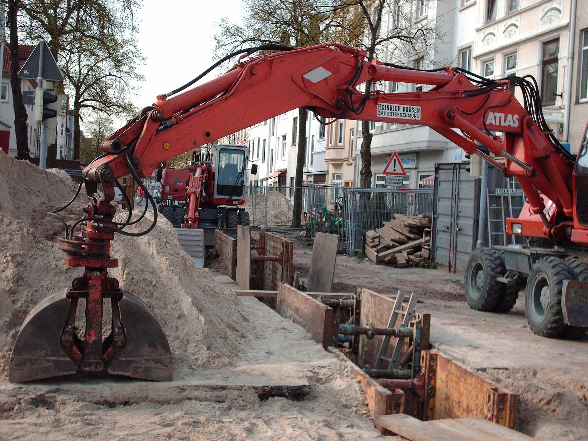

Your cylinder pushes in a straight line. Today you make it swing an arm.
A cylinder is an actuator: it makes motion, but only in a straight line. Most machines need something else, such as a flipper that knocks a part aside, a gate that lifts, or a bucket that tips.
In Mechanical Linkages you joined links with pivots to change motion. A cylinder can be one of those links. Attach it to an arm on a pivot, and its straight push becomes a swing.
Today every team turns its cylinder into a pivoting arm, then tests where the rod should attach.
A cylinder’s rod can attach to an arm close to the arm’s pivot or far from it.
1. Which makes the arm swing farther?
2. Which lets the tip of the arm lift a heavier part?

Every cylinder on an excavator arm is held by a pin at each end: one on the cylinder body and one on the rod.
As a cylinder pushes, the part it drives swings on its own pivot, so the cylinder has to tilt as it works. The pins let it tilt.
Find three cylinders in the photo. For each one, what does it swing?
The rod pushes on a point that moves along a curve. If the cylinder cannot tilt to follow it, the rod gets pushed sideways.
The cylinder leans to follow the arm, so it only pushes along its own length.
The rod is forced sideways, so the arm binds and the rod or its seal can be damaged.
The arm is a lever. The cylinder pushes close to the pivot, and the part sits at the tip. The lever ratio compares the two distances.
Attach closer to the pivot and the arm swings farther but pushes with less force. Attach farther out and it pushes harder but swings less. As with mechanical advantage, you trade force for distance.
A cylinder pushes with 6 lb. Its rod attaches to an arm 3 in from the pivot, and the part sits at the tip, 6 in from the pivot.
1. About how much force can the tip push with?
2. If the rod moves to a hole 1.5 in from the pivot, what happens to the arm?
The pivot arm simulator has a 6 in arm, a 50 mm VEX cylinder at 50 psi, and a stop that keeps the arm from flipping over. Choose the hole the rod attaches to, the load on the tip, and how the base is mounted.
| # | Hole | Load | Base | Swing | Result |
|---|
Glasses on. Then close the shut-off valve so the cylinder is vented while you build.
Mount a bar on a shaft through a bearing so it swings freely. That shaft is the arm pivot.
Attach the cylinder’s cap end with a screw or shaft through its hole, so the base can pivot.
Connect the rod’s threaded end to a hole near the pivot with hardware that lets the joint turn.
With the air off, move the arm by hand through the whole stroke. It must swing without forcing.
Keep hands out of the arm’s swing. Open the shut-off valve and test with last lesson’s flow fitting.
Run your arm with the rod in at least two different holes. Close the shut-off valve every time you move the rod.
Each symptom has one cause. Click a symptom, then the cause that explains it.
Close the shut-off valve, then stop the program. Lower the arm by hand only after the cylinder is vented.
The tank is still charged. Empty it with your teacher before the kit is stored. Keep your sketch: the next lesson starts the Assembly Line project, and your station will need a mechanism like this one.
1. A team’s pivoting arm cannot lift a heavier part. Without changing the pressure, which change helps most?
2. Name a place on a robot or a factory line where a cylinder-driven arm would be useful. Explain why the cylinder needs a pivot at both ends.